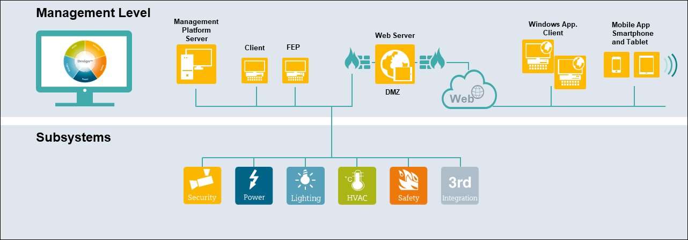

Server and a Remote Web Server (IIS)
This is the configuration choice for the cases where web connectivity is required to allow remote access via Windows App Client or to provide remote connectivity to an external applications via web services.

Communication between the key components is required to be secured by standard IT security mechanisms such as certificates. Communication to components in the Internet must be secured by customer or trust center provided certificates and protected by professional hardware firewalls/DMZ.
The Server, history database and along with the SMC and the Installed Client are deployed on the same hardware platform, which can be physical or virtual.
Depending on the system size or specific customer indications the web server (IIS) can be deployed as any of the following option:
Remote Web Server hosted on Client/FEP Station
A remote web server (IIS) hosts web sites and web applications. To simplify the web site configuration using SMC, it is recommended that you also install the Desigo CC client (or FEP) component on this machine.
Remote Web Server hosted on Client/FEP Station in a DMZ Network
In a DMZ setup, the web server (IIS) and the Desigo CC server are hosted on separate machines that are on different networks, separated by firewalls.
In such a scenario, commercial SSL certificates are typically used for the web site on IIS. For verifying the signature of the Windows App client, the same certificate or a separate commercial or self-signed certificate, may be used. However, you can use the same certificate if the private key, used to secure the web site, is exportable.
Remote Web Server on a Separate Computer
If the customer’s IT department requires using existing web servers, to be installed in a separate controlled environment, or if it is preferred not to use the Client/FEP station to host web server(IIS), then the web server is hosted on the separate computer.
For systems with key components in the Internet additional network and IT security measures need to be implemented to run Desigo CC properly:
- Only Windows App Clients are hosted outside the customer network.
- Communication between all key components is required to be secured by standard IT security mechanisms such as VPN and/or certificates.
- Communication to components on the Internet must be secured by customer or trust center provided certificates and separated from the customer network by professional hardware firewalls/DMZ.
- Logon to Desigo CC on the Internet only with users on the customer’s Active Directory.
- Field systems must be separated from Internet access.